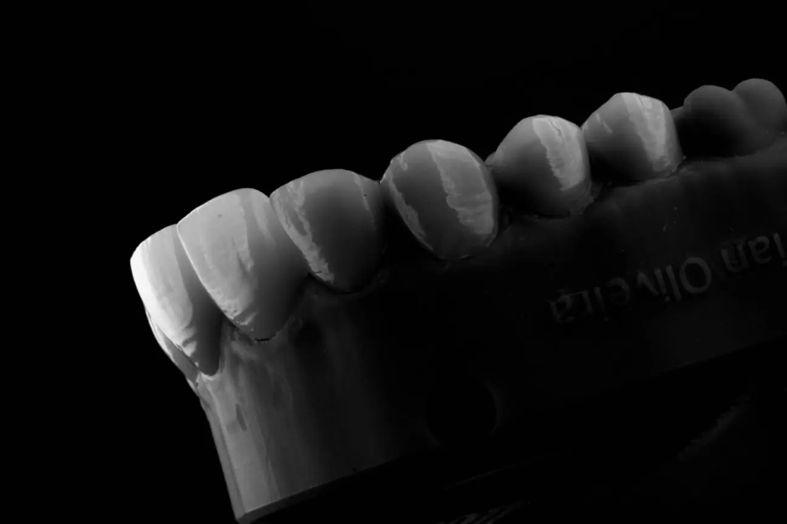
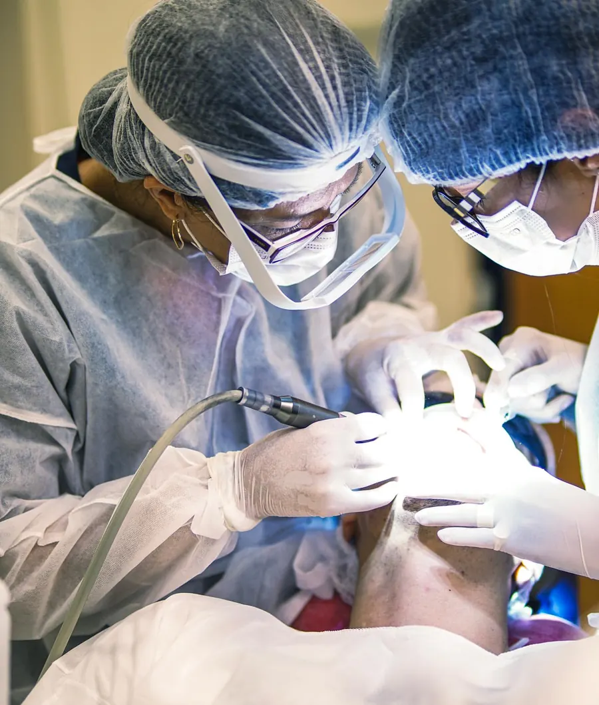
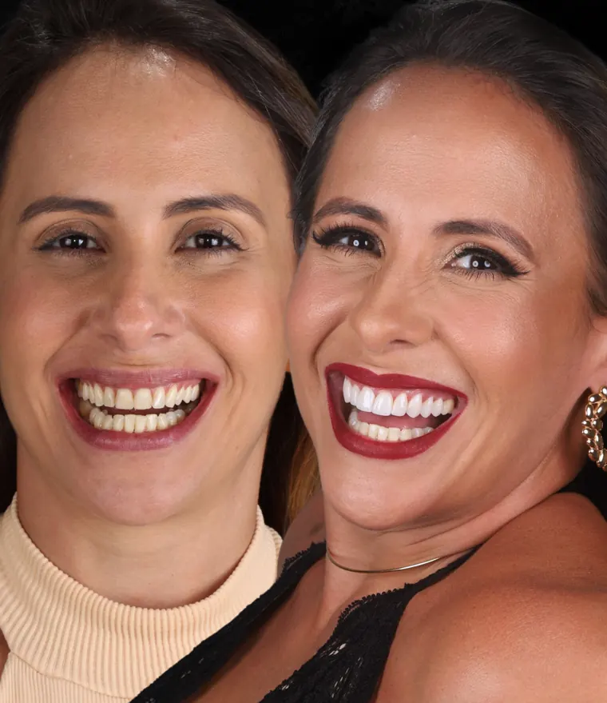
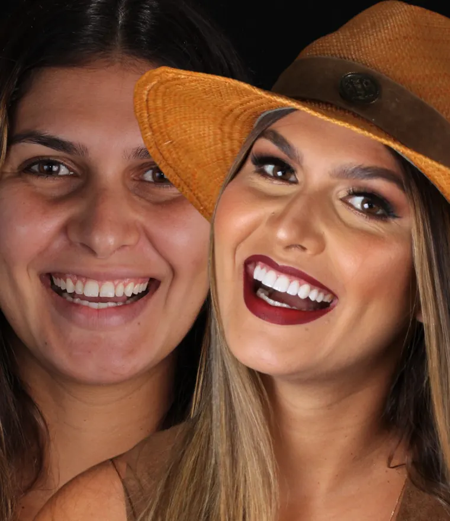
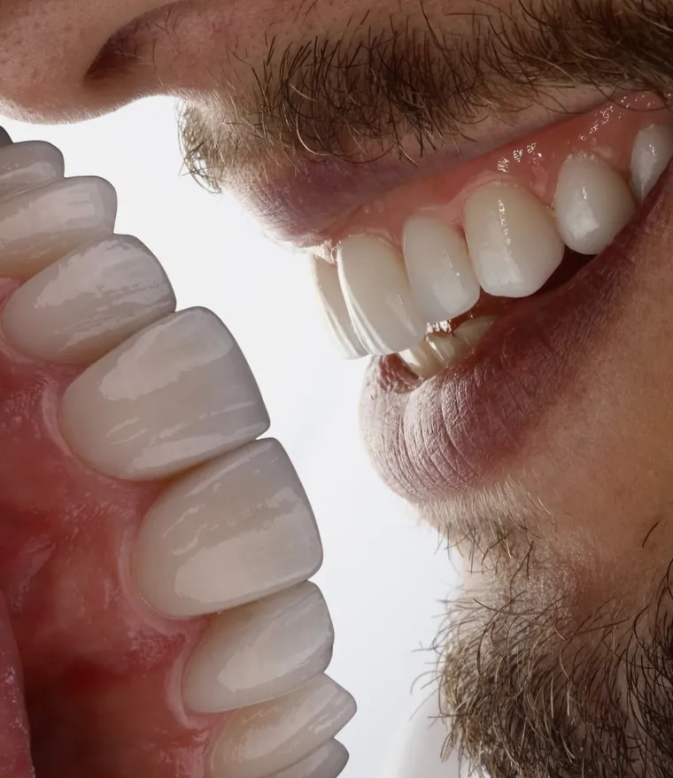
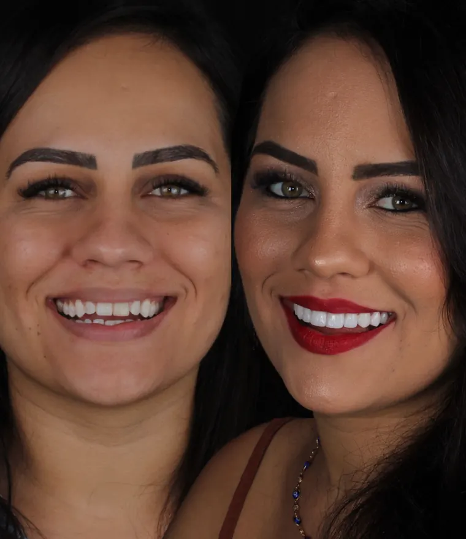
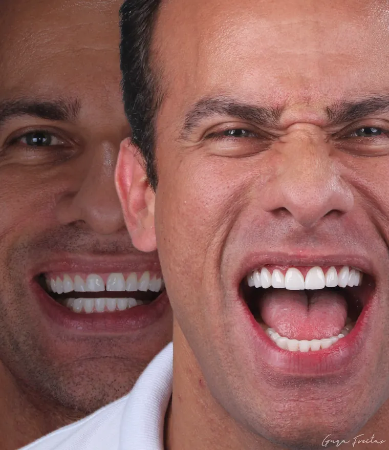
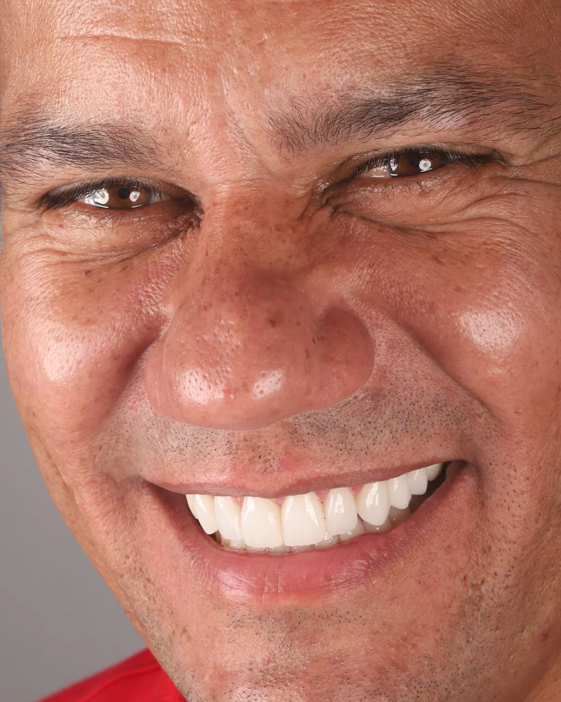
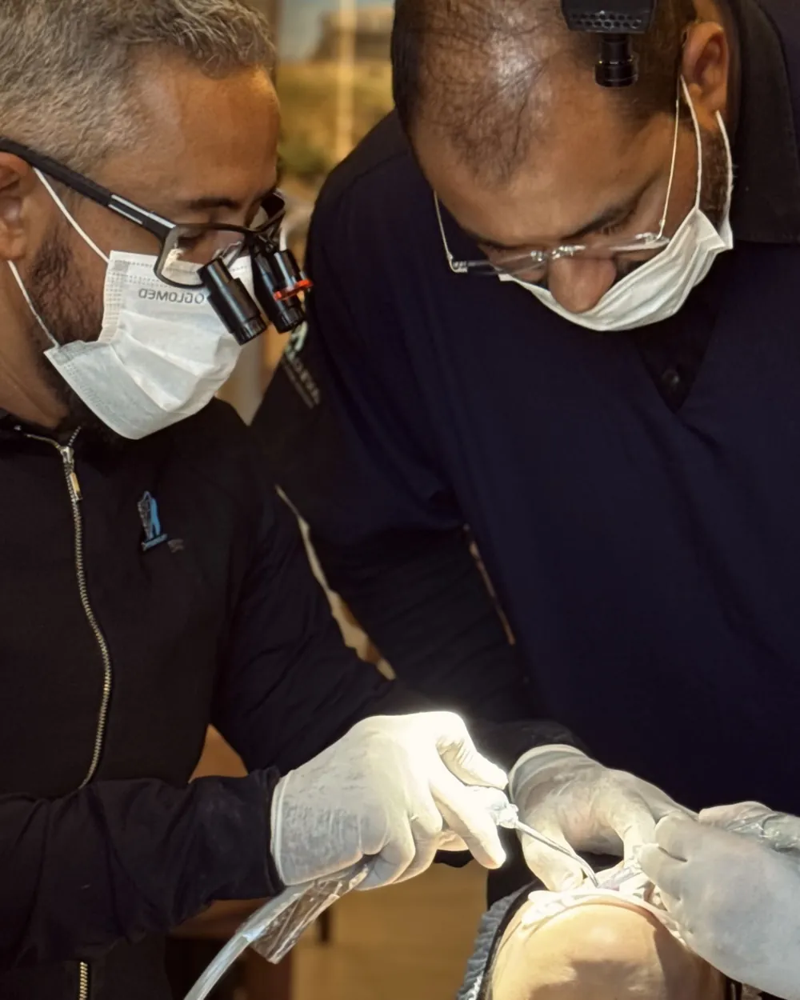

01
Experiência clínica
0:38
Método Personalizer Imersão presencial em lentes de contato dentais
Em 3 dias, você executa um caso de lentes da foto à cimentação — e volta para a clínica pronto para fazer o próximo sozinho.
Uma imersão prática, lado a lado com o Dr. Gustavo Freitas, em paciente modelo real: planejamento, preparo, escaneamento, laboratório e cimentação.
- 36 horas
- 3 dias consecutivos
- turma de apenas 5 alunos
3 diasde imersão
Turma de apenas 5 alunos. É o limite para garantir uma imersão acompanhando cada preparo de perto. Próxima turma: [DATA] · [CIDADE].
Só 5 vagas por turma.
- +50turmas realizadas
- 22anos de docência do Dr. Gustavo Freitas
- 5alunos por turma
- 36hde prática em 3 dias
Mais de 50 turmas formadas. Agora é a sua vez.
Para quem é
Essa imersão é para você se…
É para você se:
- Já atende ou quer começar a atuar com lentes de contato dentais
- Já fez curso de lentes, mas ainda não tem segurança para executar um caso completo sozinho
- Sente insegurança nos preparos ou na cimentação
- Quer saber o resultado do caso antes de preparar o dente
- Quer aprender o fluxo digital (escaneamento, laboratório, fresagem) na prática
- Prefere aprender perto do professor, numa turma pequena
Não é para você se:
- Procura um curso online ou só teórico
- Quer apenas um conteúdo introdutório
- Não é cirurgião-dentista com registro ativo no CRO
Você não precisa ter scanner nem nenhum equipamento. Está tudo incluso.
Método Personalizer
Não é sobre técnica. É sobre previsibilidade.
Quase todo dentista sabe fazer um preparo. O que trava é não ter certeza do resultado antes de começar. O Método Personalizer organiza o tratamento para que você saiba, antes de tocar no dente, exatamente onde vai chegar — e entregue ao paciente o sorriso que mostrou para ele com segurança e previsibilidade.
-
01
Planejamento individualizado
Entender o paciente e definir o caso com foto, mock-up e escaneamento antes de qualquer preparo.
-
02
Execução previsível
Integrar preparo guiado, escaneamento e laboratório para desgastar só o necessário.
-
03
Refinamento clínico
Provar, ajustar e cimentar com precisão.

Ao final dos 3 dias, você terá executado um caso completo e saberá planejar, conduzir o mock-up, preparar, trabalhar com o laboratório, avaliar as cerâmicas e cimentar com segurança.
Viva por inteiro
A prática começa aqui.
Dois olhares sobre a imersão: as mãos no caso clínico e as pessoas que viveram os três dias. Ative o som e assista do seu jeito.
02
Bastidores
0:28
Por dentro da imersão
Por dentro da experiência
Três dias. Uma jornada completa.
Um roteiro pensado para você dominar o planejamento, o preparo e a cimentação de lentes de contato dentais — e sair sabendo exatamente o que fazer quando voltar para sua clínica.
Experiência clínica real
Não apenas assista.
Vivencie o caso.
O Personal Lentes Dentais coloca você dentro de uma experiência prática em paciente modelo. Você acompanha o planejamento, participa do atendimento e entende cada etapa da reabilitação estética — do início à fotografia final.
Quero garantir minha vagaMomentos que ficam
Uma experiência em movimento.
Entre técnica, troca e atenção aos detalhes, cada encontro ganha uma nova perspectiva.

Quem já viveu
Mais de 50 turmas. Veja o que eles dizem.
Um método personalizado
Poucos alunos. Mais proximidade.






01 / 06
Entendemos que cada aluno possui uma demanda individual e particular dentro da sua trajetória profissional. Por isso, criamos uma experiência para poucos alunos, durante três dias, permitindo que dúvidas, inseguranças e desejos particulares sejam tratados de maneira extremamente personalizada.
- Planejamento individual
- Acompanhamento próximo
- Atenção personalizada

Quem conduz
Quem vai estar do seu lado nos 3 dias
Prof. Dr. Gustavo Freitas
[FORMAÇÃO / ESPECIALIDADE]
Dentista e professor há 22 anos, com mais de 50 turmas presenciais formadas. Criou o Método Personalizer para resolver o que mais via nos alunos: saber a técnica e, mesmo assim, não ter segurança para executar um caso de lentes do começo ao fim. Na imersão, acompanha cada aluno de perto — por isso a turma tem só 5 vagas.
“Não é sobre aprender uma técnica… é sobre uma filosofia de atendimento e como transformar vidas com suas próprias mãos.”
Você só precisa chegar
Você não leva nada. Tudo já está lá.
Nenhum equipamento, nenhum material, nenhuma compra antes da imersão. Tudo o que você vai usar nos 3 dias já está preparado.
-
01
Paciente modelo
O caso real já selecionado e preparado para você executar.
-
02
Material clínico completo
Todo o material de mock-up, preparo, prova e cimentação.
-
03
Equipamentos
Scanner intraoral, câmeras e toda a estrutura clínica. Você não precisa ter nada disso.
-
04
Laboratório
Visita técnica e fresagem dos laminados cerâmicos do caso.
-
05
Coffee breaks
Todos os intervalos dos 3 dias com coffee break incluso.
-
06
Certificado
Certificado de 36 horas do Personal Cursos.
Você só precisa de uma coisa: vontade de sair diferente de como entrou.
Quero garantir minha vagaPróxima turma
Data, local e vagas.
- Próxima turma
- [DATAS]
- Local
- [CIDADE — ENDEREÇO]
- Vagas
- 5 alunos por turma
- Carga horária
- 36 horas · 3 dias · [HORÁRIO] por dia
- Pré-requisito
- Cirurgião-dentista com CRO ativo
- Certificado
- Certificado de 36 horas
Ainda tem dúvidas?
Perguntas frequentes.
O que você precisa saber antes de viver o Personal Lentes Dentais.
Para quem é o Personal Lentes Dentais?
Para profissionais que buscam aprimorar sua atuação nas reabilitações estéticas com lentes de contato dentais, com uma experiência que combina conteúdo teórico e prática clínica.
Quantos dias dura a experiência?
São 3 dias consecutivos, totalizando 36 horas.
Existe prática em paciente modelo?
Sim. A experiência inclui prática real em paciente modelo, acompanhando diferentes etapas do atendimento clínico.
O que será abordado durante os três dias?
Planejamento, atendimento clínico, protocolo fotográfico, mock-up, escaneamento, técnicas de preparo, guias de preparo, fluxo digital, laminados cerâmicos, prova, ajustes e cimentação.
O material está incluso?
Sim. O material necessário para a experiência está incluso.
Quantos alunos participam?
A turma tem apenas 5 alunos, permitindo um acompanhamento mais personalizado.
Qual é o investimento?
O investimento é de R$ 7.987,00 à vista, com opção de entrada + parcelamento no cartão.
A taxa de inscrição é reembolsável em caso de desistência?
Em caso de desistência, a taxa de inscrição não será devolvida.
Sua próxima fase começa aqui
Não faça apenas mais um curso. Viva a experiência.
Três dias para aprender, executar, perguntar, ajustar e voltar para sua clínica com uma nova perspectiva sobre as lentes de contato dentais.
36 horas · 3 dias consecutivos · turma de apenas 5 alunos
Próxima turma: [DATA] · [CIDADE]